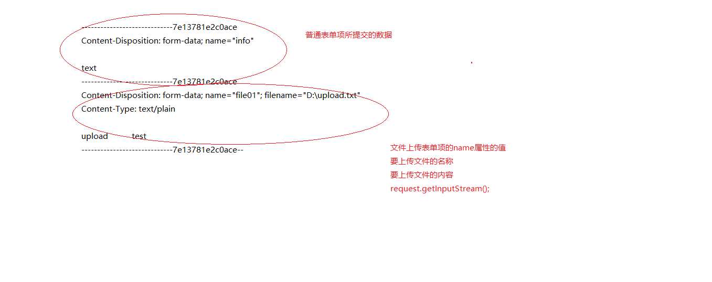

upload
文件下载的概述
服务器通过网络以流的形式将文件发送到客户端的过程
应用场景
电影下载
音乐下载
安装文件下载
实现方式
- 可以使用超链接来实现文件的下载
<a href="要下载文件的地址">下载</a>
注意：如果要下载的文件类型是浏览器支持的类型，浏览器会直接打开这个文件，并不会下载这个文件，比如图片，下载不到WEB-INF下的文件- 可以使用代码来实现文件的下载
需要有两个头一个流
Content-type 设置要下载文件的类型(MIME类型)
Content-Disposition 通知浏览器，你不要关心下载文件的类型，什么类型的文件都进行下载操作
字节输出流 respose.getOutputStream()
超链接方式实现文件下载的功能
1 | <a href="${pageContext.request.contextPath}/pic.jpg">下载</a> |
代码方式实现文件下载的功能
1 | //路径 |
代码方式实现文件下载的功能优化
文件上传的概述
用户将本地文件通过网络上传至服务器的过程
应用场景
照片上传
简历上传
文件上传的技术
jspSmartUpload 应用在jsp上的文件上传和文件下载的组件
fileupload 应用在java上的文件上传技术，由Apache开源组织提供
servlet3.0 提供了文件上传的技术
Struts 提供了文件上传的技术
文件上传的必要因素
需要有一个表单
表单的method属性的值必须设置为post
表单的enctype属性的值需要设置为multipart/form-data
表单需要有一个input标签
input标签type属性的值需要设置为file
input标签需要有name属性和值
文件上传的原理分析

获取表单提交的数据
1 | protected void doGet(HttpServletRequest request, |
获取表单上传的文件
DIskFIleItemFactory的常用API
DiskFileItemFactory
void setSizeThreshold(int sizeThreshold)
设置缓冲区大小
void setRepository(java.io.File repository)
设置临时目录
ServletFIleUpload的常用API
ServletFileUpload
static boolean isMultipartContent(javax.servlet.http.HttpServletRequest request)
public void setFileSizeMax(long fileSizeMax)
public void setSizeMax(long sizeMax)
FileItem的常用API
void getSize()
void delete()
void write(java.io.File file)